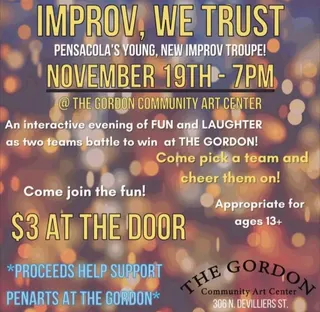

The Gordon Community Art Center
2 shows on the diypensacola record since 2022
the record goes quiet after November 2022.

Nov 19, 2022 · improv, we trustthe record goes quiet after November 2022.

Nov 19, 2022 · improv, we trust